Oracle Intelligent Bots Advanced Training - Lab 6 (Translation)
Oracle Intelligent Bots Advanced Training - Lab 6 (Translation)Currently Oracle Intelligent Bots’ approach to multi-language chatbot applications is to build single base-language bots in English and use Google or Microsoft translation services and resource bundles to support foreign languages.
In this lab, we'll use Google Translation Services to create German and French versions of the 24hrsflowers bot.
You'll need a Google account and a credential key to access the Google translation service API.
 Set Up Your Environment
Set Up Your Environment
- Click
 , select Development > Backends, open your backend, click the Settings tab and copy the following values to a temporary file:
, select Development > Backends, open your backend, click the Settings tab and copy the following values to a temporary file:
- Backend ID
- Anonymous Key
- Click and select Development > Bots.
- Within the tile for the
advt24hrsflowers_bot6bot, click , select Clone, and name the clone
, select Clone, and name the clone advt24hrsflowers_bot6<YourUniqueInitials>. For example:advt24hrsflowers_bot6JS. - Locate the tile for your clone of the bot (using the Search field might help) and click it to open the bot. Click
- Paste your backend's ID into the Backend ID field.
- Paste your backend's anonymous key into the Anonymous Key field.
 in the left navigation for the bot.
in the left navigation for the bot.
Google Translation Service Setup
Please check with your course instructor to see if the Google translation service is set up in your training environment or if you need to request your own key. If you need to request your own key, following these steps:
- Open a new browser window or tab.
- Go to the Google developer page to request a credential key using your Google account username and password.
- On the Google APIs & Services dashboard, click the ENABLE APIS AND SERVICES link and select the Cloud Translation API option.
- Back in the dashboard, select Create credentials > API Key.menu option to create a credential key.
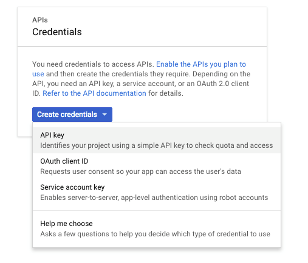 - Once the key is displayed in the opened dialog box, click Close to get back to the dashboard.
Note: The Google translation service is not free of charge. If, however, translation is the only Google paid API or service you use, then the free credits you have from your account will keep you going for very a long time.
Add the Translation Service to Your AMCe Instance
To use a translation service in Oracle Intelligent Bots, you need to register the service and the credential key in your Oracle Intelligent Bots instance.
- Click and select Development > Bots.
- In the upper right part of the page, click and select Translation Services.
- Click the + Service button and:
- For the Service Type, select Google.
- In the Base URL field, enter the following REST URL:
https://translation.googleapis.com/language/translate/v2
- In the Authorization Token field, paste the credential key you obtained from Google.
- Click Save.
 Enable Translation for Your Bot
Enable Translation for Your Bot
Once translation services are set up for your AMCe instance, you can enable them in the bot.
- Open your bot (
advt24hrsflowers_bot6<YourUniqueInitials>). - In the left navigation of your bot, click
 .
. - On the General tab, in the Translation Service select list, select Google.
 Auto-Translation
Auto-Translation
In this section we'll set up auto-translation for display components and user input. This should allow the bot to automatically understand input from various different languages, and to respond automatically in the the same language.
Set Up Auto-Translation
To set up auto-translation, we'll create states to:
- Set the
autotranslatecontext variable totrue. This ensures that all display content will be translated to the detected user language, except for components where translation is explicitly turned off. - Detect the language being used.
- Enable translation of user input so that the intent engine can process it before generating appropriate responses back in the language of the user input. We'll do this by setting the
translateproperty for thegetUserIntentstate'sSystem.Intentcomponent totrue.
First let's turn on autotranslate.
- In your bot, click
 to open the dialog flow editor.
to open the dialog flow editor. - Near the top of the flow in the
context: variablesection, add the following variable:autoTranslate: "boolean"
- Click the + Components button, click Variables, and select Set variable.
- From the Insert After dropdown, select setImageHost.
- Make sure the Remove Comments toggle is set to ON.
- Click Apply.
- Change the name of the added
setVariablestate toenableAutoTranslation. - Set the
variableproperty value to"autoTranslate"and thevalueproperty totrue. - Add a
next:transition with a value of"detectLanguage".Here's what the state should look like:
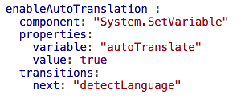
Now we'll use the System.DetectLanguage component to detect the language being used.
- Click the + Components button, click Language, and select Detect Language.
- From the Insert After dropdown, select enableAutotranslation.
- Make sure the Remove Comments toggle is set to ON.
- Click Apply.
- Add a
next:transition with a value of"setDiscount".Here's what the state should look like:
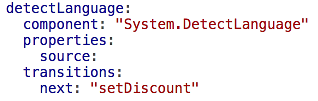The user language is detected from the natural language input. Once detected, the language is saved into the
profile.languageTagsystem variable which then assumes precedence over theprofile.locale variable.
Finally, we'll set the System.Intent component's translate property to true.
- Navigate to the
getUserIntentstate. - Under the variable property, add this property:
translate: true
Here's what the beginning of the state should look like:
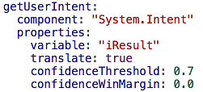Note: All system components that display labels, prompts, descriptions or bot responses have a
translateproperty, which you can set tofalseif you don't want the component translated.
Test Auto-Translation
- Open the bot tester (
 ), type
), type I like to order 12 red rosesin the Message field, and click Send.You should get a response in English.
- Now click Reset and then try
Me gustaría pedir 12 rosas rojas.This should elicit a bot response like the following:
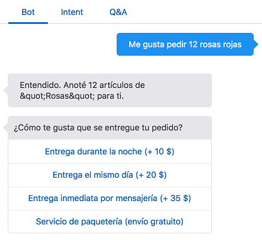 - Click through the first few prompts and then press Reset.
Note: When testing foreign languages, if the bot does not understand some user input, it might be that the English translation of that input is different from the English utterances that the bot has been trained on. In this case you need to add missing English utterances and train again.
- Next try a similar phrase in Hindi by copying and pasting
मुझे 12 गुलाब के फूल खरीदने हैं.This bot responds with this:
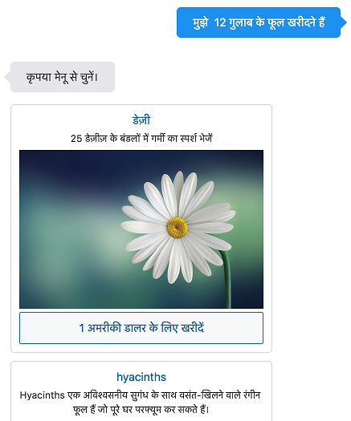This isn't quite what we wanted. Even though phrase we entered translates to "I want to buy 12 rose flowers", it does not recognize "rose" as being part of the flower entity. So instead of providing a response specific to roses, it displays the Flowers menu.
So let's work on improving the entity recognition by adding "rose" as a synonym to "Rose" in the Flowers entity.
- Click .
- Select the Flowers entity, hover over the Roses entry, and click the pencil icon.
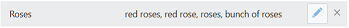 - Add
roseas a synonym and click Update. - Go back to the bot tester and again try
मुझे 12 गुलाब के फूल खरीदने हैं.This time you should see:
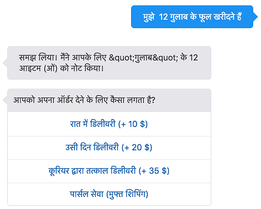 - Now try to order 12 red roses in any other language you know to see if the intent gets resolved and entities recognized.
If the bot doesn't respond appropriately, try fixing it by adding utterances to the intent and/or synonyms to the entity.
Heads up for German and French testers: German and French testing may show strange encoding for quotation marks. This is because the bot has been set up with resource bundles for German and French, which means that the auto-translation mechanism might attempt to translate an already translated string, causing that confusion.
 Resource Bundles
Resource Bundles
Using translation services to merely understand foreign texts works quite well. However, using auto translation for prompts, labels and data responses may be problematic because you don't have any control over the wording and the tone being used. And sometimes even the grammar is a bit off.
To stay in control of what messages are displayed to users, it is common in software development to use resource bundles with pre-defined and parameterized strings. The same goes for Oracle Intelligent Bots.
- In your bot, click to open the dialog flow editor.
- Navigate to the
enableAutoTranslationand set itsvalueproperty tofalse. - Don't change the
detectLanguagestate. - Click to open the resource bundle editor.
Here you see a list of resources along with their French and German translations.
The key name needs to be unique within a bot.
- From the View By dropdown, select Language.
This view makes it easier to edit and update strings.
Selecting a language, e.g
defor German, and clicking the + Key button allows you to easily create a new translation string for an existing key. (Each key must be first created for the default language.) - Click to open the dialog flow editor.
- Browse the dialog flow and look out for
${rb.<string>}and${rb('key string','argument string')}expressions to learn how resource bundles are referenced at design time. - Within the
getUserIntentstate, setqnaEnabletotrue. - Open the bot tester () and click Reset.
- Type
Ich moechte 12 rote Rosen bestellen, which is German forI 'd like to order 12 red roses.The response should look like this:
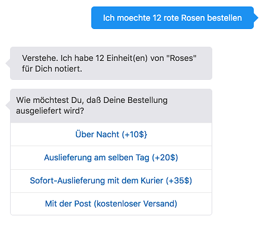
All display strings are taken from the de resource bundle, allowing you control over wording and tone. For example, you might choose to use "Du" (the familiar from of "you") to create a more informal tone and be more attractive to younger people.
You should always use resource bundles, even if you don't need to support multiple languages. Resource bundles enable you to manage common strings in one place. For example, if your product name changes, you can change the string for your product name in one place instead of searching for all of its occurrences in the dialog flow.
What Can Go Wrong?
Errors can happen if you forget to create the resource bundle key before you start using that key in BotML. Typically if that's the case, the bot response shows the FreeMarker expression that could not be resolved.
Some components, like the CR component, throw an exception that you can look up by combing through the JSON output in the bot tester. The error message is a parse exception complaining about an unexpected < character.
 Limit the Language Support to French and English
Limit the Language Support to French and English
Even with translation services augmenting natural language understanding, it does not make sense to support languages nobody in your organization speaks or knows well enough to do right.
The 24hrsflowers business has language expertise in English, German and French. Therefore, the initial bot should only support those languages.
We'll set up suppport for those languages using the following components:
- A
Switchcomponent with an Apache FreeMarker Expression to check theprofile.languageTagvariable set by theSystem.DetectLanguagecomponent foren,deorfr.If one of these strings is found, the flow continues to the
GetUserIntentstate. Otherwise a list is shown informing the user that only English, French and German is supported by the bot. - A CR component with its
translateproperty set totrue, so that the list labels and the prompt (which are read from resource strings you created) get translated into the user language.This enables the user to select a supported language or exit the conversation. If one of the supported languages is selected, the conversation then continues in the selected language.
Let's get the components set up and add entries to the resource bundle.
- In your bot, click to open the dialog flow editor.
- Click the + Components button, click Controls, and select Switch.
- From the Insert After dropdown, select detectLanguage.
- Click Apply.
- Rename the
switchstate name tocheckUserDetectedLanguage. - Replace the state with the following code:
checkUserDetectedLanguage: component: "System.Switch" properties: source: "${['de','fr','en']?seq_contains(profile.languageTag)?string('yes','no')}" values: - "yes" - "no" transitions: actions: yes: "setDiscount" no: "selectLanguageFromList" NONE: "selectLanguageFromList"The state should now look like this:
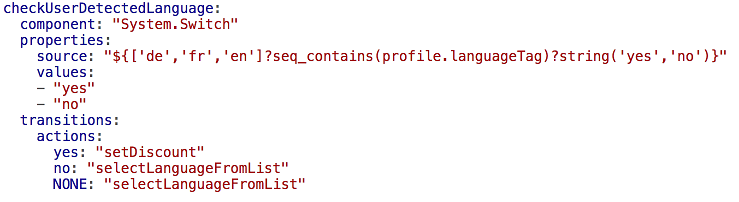 - Go to the
detectLanguagestate and change the value of thenexttransition to"checkUserDetectedLanguage". - Click the + Components button, click User Interface, and select Common response - text.
- From the Insert After dropdown, select checkUserDetectedLanguage.
- Click Apply.
- Change the state name to
selectLanguageFromList. - Delete the
variable,nlpResultVariable, andmaxPromptsproperties. - Set the
translateproperty totrue. - Click to open the resource bundle editor.
We need to add the resource bundle entries before we can refer to them from the dialog flow.
- Select the
defaultlanguage. - Enter the following key/value pairs by doing the following for each pair:
- Clicking + Key.
- Entering the key/value pair.
- Clicking Create.
- globalLanguageEnglish : English
- globalLanguageFrench : French
- globalLanguageGerman: German
- globalLanguageExit: Exit Conversation
- globalLanguagePrompt: I am sorry, but I only understand English, German and French. Please choose from the options below.
- Click to return to the dialog flow editor.
- Update the
selectLanguageFromListAddstate to use the keys we just added to the resource bundle. You can do so by replacing the existing state with this code:selectLanguageFromList: component: "System.CommonResponse" properties: processUserMessage: true keepTurn: false translate: true metadata: responseItems: - type: "text" text: "${rb.globalLanguagePrompt}" actions: - label: "${rb.globalLanguageEnglish}" type: "postback" payload: variables: profile.languageTag: "en" - label: "${rb.globalLanguageGerman}" type: "postback" payload: variables: profile.languageTag: "de" - label: "${rb.globalLanguageFrench}" type: "postback" payload: variables: profile.languageTag: "fr" - label: "${rb.globalLanguageExit}" type: "postback" payload: action: "exitConversation" variables: profile.languageTag: "en" transitions: actions: exitConversation: "exitBot" next: "showMenu"
Test the Translation
- Open the bot tester () and click Reset.
- Type
Hallo.This is a supported language, so the follow-up menu is displayed in German.
Reset the conversation again. - Now try
मुझे 12 गुलाब के फूल खरीदने हैं.This will show this user information dialog:
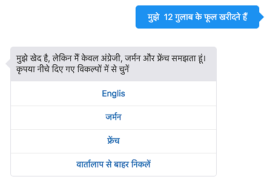 - Select one of the first three options to continue in one of the supported languages.
- Now try entering the equivalent of
I'd like to order 12 red rosesin a language not supported by the bot and see what happens. - Just to confirm that NLP language recognition still works, type "I'd like to order 12 red roses" into the messenger field and click Send.
Translating the Flowers and Bouquets Menus
When browsing through the whole flower order process you will recognize that the flower and the bouquet menu data is not translated. The options to handle this are:
- Set the
translateproperty of the CR component that renders the flowers and bouquets menus totrue. This will then uses the Google translation service to translate all displayed text. - Translate the data at its source, which in the case of this lab would be
FlowerService.js. For this, the file needs an additionallocaleattribute forSetMenu.jsto query for the translated content. - Keep business data untranslated.
Let's go with the first of those three options:
- Navigate to the
showBouquetsMenuand set thetranslateproperty to true. - Navigate to the
showFlowersMenuand set thetranslateproperty totrue. - Test the bot again, starting the tester with
Hallo.If you know German, you'll probably find that the German translation provided by Google is actually quite good.
Translating Q&A
We don't have an exercise for translating Q&A. The adtv24hrsflowers_bot6 bot has Q&A content for English, German, and French.
To support one of the additional languages supported by Q&A, you would export the base language questions and answers (English), translate the content and import it as a new language.